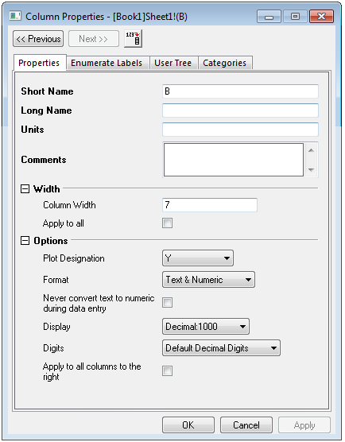

Dialog Spalteneigenschaften
ColProperties-Dialog
In dem Dialog Spalteneigenschaften können Sie die Eigenschaften jeder ausgewählten Spalte festlegen.
- 
Dialog öffnen
Um diesen Dialog zu öffnen, können Sie eine der folgenden Methoden wählen:
- Klicken Sie doppelt auf die Spaltenüberschrift des Arbeitsblatts mit dem Kurznamen.
oder
- Markieren Sie die Arbeitsblattspalte und wählen Sie dann im Hauptmenü Format: Spalte.
oder
- Markieren Sie die Arbeitsblattspalte, klicken Sie dann mit der rechten Maustaste und wählen Sie Einstellungen.
Die Schaltflächen Vorheriges und Nächstes
Die Schaltflächen Vorheriges und Nächstes oben im Dialog ermöglichen es Ihnen, Ihre Spaltenauswahl um eine Spalte nach links oder nach rechts zu verschieben. Daher können Sie die Eigenschaften einer anderen Spalte des gleichen Arbeitsblatts bearbeiten, ohne dass Sie diesen Dialog schließen und neu öffnen müssen.
Registerkarten des Dialogs
Es gibt drei Registerkarten im Dialog Spalteneigenschaften.
- Auf der Registerkarte Eigenschaften können Sie die grundlegenden Eigenschaften wie Langname, Kurzname, Spaltenbreite und Anzeigeformat einer bestimmten Spalte angeben. Lesen Sie dazu Die Registerkarte Eigenschaften.
- Die Registerkarte Beschriftungen aufzählen wird verwendet, um Kurznamen, Langnamen, Einheiten und Kommentare auf alle Spalten rechts neben der aktuellen Spalte anzuwenden. Lesen Sie dazu Die Registerkarte Beschriftungen aufzählen.
- Die Registerkarte Anwender-Baum ermöglicht es Ihnen, jede Information, die mit der Spalte verbunden ist, beizubehalten. Falls Dateien anderer Programme in die Arbeitsmappe importiert wurden, können zusätzlich einige aus der Datei extrahierten Informationen in diesem Anwender-Baum gespeichert werden. Lesen Sie dazu Die Registerkarte Anwender-Baum.
- Die Registerkarte Kategorien des Dialogs Arbeitsmappe Spalteneigenschaften ermöglicht es Ihnen, die kategorialen Eigenschaften einer spezifischen Spalte anzupassen. Lesen Sie dazu Die Registerkarte Kategorien.